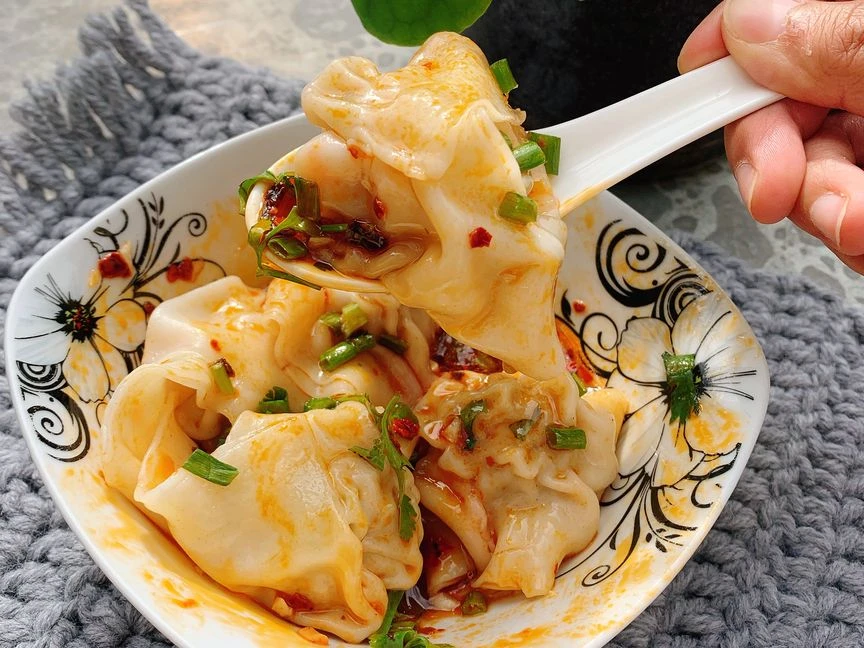

Sichuan-style Spicy Wontons
A recipe adapted from "Sichuan-style spicy
wontons". It is a recipe that Jody introduced and wanted us to make together over the holidays before I
went back home.

Description
Fiery and numbing Sichuan spicy wontons (Hong You Chao Shou) are just addictive. If you are not a big fan of
spicy food, tune down the chili oil or add some beef stock soup. I recommend chili oil with crisp (e.g. Lao Gan
Ma), or even better, homemade. This recipe makes approx. 50 pieces of wonton, which can be frozen and last up to
1 month. The amount of chili sauce is measured for each bowl.
Ingredients
- 500g ground pork
- 400g wonton wrappers
- 4 scallions
- 1 tablespoon of ginger
- 1 egg
- 2 soy sauce
- 2 tablespoon of oyster sauce
- 1 tablespoon of Shaoxing wine
- 2 tablespoon of toasted sesame oil
- 1/2 teaspoon of white pepper
- 1/2 teaspoon of sugar
- 1/2 teaspoon of salt
- 2 teaspoon of chilli oil
- 1 clove of garlic
- 1 teaspoon of dark rice vinegar
- 1 teaspoon of toasted sesame oil
- 1 soy sauce
- 1/4 teaspoon of Sichuan pepper powder
- 1/2 teaspoon of brown sugar
- salt
- scallion (for garnish)
- cilantro (for garnish)
- water
Steps
- Cut scallion into fine rings. Mince ginger. Let frozen wonton wrapper set in room temperature.
- Add ground pork to a large mixing bowl with minced ginger and scallion. Add soy sauce, Shaoxing wine, oyster
sauce, toasted sesame oil, white pepper powder, sugar, and salt. Mix with a pair of chopsticks or a fork
until a sticky paste forms.
- To make the wonton, set aside a small plate of water. Scoop approx. 1 tsp of pork filling to the wrapper,
brush the edges with some water, and fold in half to rectangle, press along the edges to seal. Moist one
corner of the fold line, overlap with the other corner, and press to seal (see video). Repeat this process
with remaining wrappers and filling.
- To enjoy now, cook wonton s in boiling water over medium-high heat. Once the water is boiling again, add
some cold water. Repeat this process one more time. When the wontons are floating and the wrappers are
almost translucent, they’re done. Store the rest in freezer for up to 1 month.
- In the meantime, mince garlic. In a serving bowl, add chili oil (with crunchy chili), ground Sichuan pepper,
dark rice vinegar, toasted sesame oil, soy sauce, brown sugar, and garlic. Season with salt to taste (The
amount of sauce is measured for one bowl). Garnish with scallions and cilantro, or chopped peanuts if
desired. Enjoy!